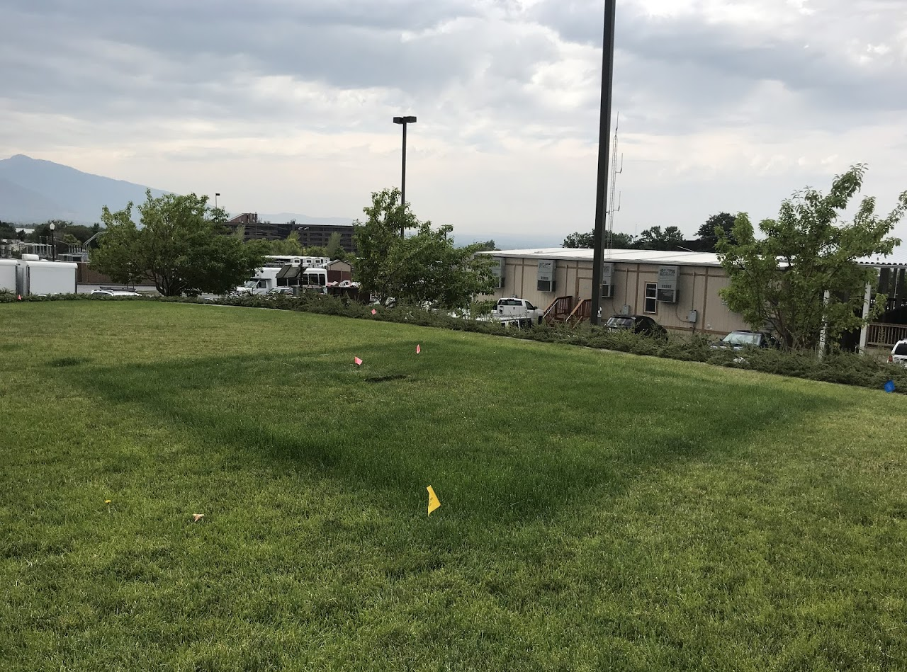

Research
Optimal Green Infrastructure: Reducing Stormwater Pollution in Maunalua Bay, O’ahu, Hawai’i
High runoff from urban areas has negative impacts on receiving water bodies. In Hawai’i, this problem is exacerbated by the natural landscape, which rapidly changes from steep ridges to low-lying valleys nearshore. Maunalua Bay, a region located on the southeastern coast of O’ahu, has been declared an impaired water body by the Hawai’i Department of Health due to high levels of nutrients and pollutants. Nine highly urbanized watersheds feed into Maunalua Bay, and runoff during storms deposits harmful sediment and pollutants into the Bay. To improve the health of Maunalua Bay, this project utilized hydrologic modeling to determine the runoff-reduction potential of green infrastructure under climate change projections. We created hydrologic models to determine areas of high runoff to guide where to prioritize green infrastructure placement within the urbanized environment. Green infrastructure is a useful means to capture runoff before it enters a waterbody. Targeting strategic locations for runoff reduction practices, such as green infrastructure, can reduce the quantity of runoff that feeds into Maunalua Bay, improving water quality. We also conducted a climate change analysis by modeling how future precipitation projections might influence regional runoff patterns. Our results can serve to inform stormwater management practices that prioritize green infrastructure placement in high runoff locations modeled under current and future climate scenarios.
Identifying Fallowed Parcels in Kern County, California using an NDVI Classification from Landsat-8 TOA Imagery
Agricultural abandonment (or fallowment) can be described as a situation where [the] human control over land (e.g. agriculture, forestry) is given up and the land is left to nature. Causes of agricultural abandonment range from social, economic, political and environmental factors. Environmental factors such as prolonged drought conditions and water use are drivers in abandoned lands. Persistent drought is creating water shortages throughout the Western United States, thus leading to an increase in the extent of unplanted agricultural lands in California’s Central Valley. Specifically, Kern County, located in California’s San Joaquin Valley, is the largest crop-producing county in California where farmers grow a wide variety of high-value commodities such as almonds, grapes, and pistachios. More recently, Kern County farmers have been faced with persistent drought conditions leading to water shortages and ultimately fallowed lands. Drought conditions across the state have been exacerbated by high temperatures, with 2012–2014 being the hottest three-year period on record. Here, we focus our analysis identifying fallowed parcels in Kern County, California during the 2015 drought period utilizing Top of Atmosphere (TOA) Landsat-8 Imagery from Google Earth Engine (GEE) API.
Rainfall gradients across the Isthmus of Panama
As climate changes, tropical forests will be affected by changes in precipitation and temperature, resulting in feedbacks to global climate and processes. The Functionally-Assembled Terrestrial Ecosystem Simulator (FATES) model, being developed at Berkeley Lab, is structured and parameterized to represent ecological dynamics of tropical forests under different environmental regimes. In this analysis, we assimilated and characterized climate data measured from three sites (Parque Nacional Metropolitano (PNM), Barro Colorado Island (BCI), and Parque Nacional San Lorenzo (SLZ) along a rainfall gradient in Panama. We examined the effects of the rainfall gradient on the FATES predictions of GPP. We found as precipitation increased GPP increased between the three sites, and we found no differences in wet season GPP per leaf area across sites, indicating solar radiation (SR) is driving differences in GPP across the rainfall gradients sites. We also found canopy biomass was highest at SLZ, BCI then PNM during the wet season. However, understory biomass had a declining effect across all sites in the wet season. This work assists in the development and evaluation of the FATES model and aid in predicting the impacts of climate change on forest ecosystem processes and functions.
Global Photosynthetic Capacity (Vcmax) within Canopies
Maximum rubisco carboxylation rate (Vcmax) varies with daily integrated quantum flux density (Qint) along vertical transects within forest canopies. In this study, we investigated what drives the patterns of Vcmax plasticity observed within forest canopies, where gradient in light availability from canopy top to bottom can be >50-fold. We conducted correlation analyses of Vcmax plasticity against both environmental (light: PAR, temperature, vapor pressure deficit: VPD, elevation, latitude & longitude) and soil (soil water availability: a, silt content, clay content, pH, C:N & cation exchange capacity: CECS, water content: WC) parameters to explore their influence on Vcmax plasticity within forest canopies and different vegetation types (Deciduous broadleaved forests: Decid. BL, Evergreen temperate: Evergr. temp, Evergreen needle leaf: Evergr. NL, & Evergreen tropical: Evergr. trop). We calculated Vcmax plasticity between Qint step changes: 1-3, 3-6, 6-12,12-20, 20-30, 30-40. For environmental and soil parameters, the most commonly correlated Vcmax plasticity step changes included: plasticity changes 30-40 and 6-12. Our results revealed that Vcmax plasticity varied within plant functional types (PFTs) and for environmental and soil parameters. Two out of seven environmental parameters -VPD and PAR-, and three out of six soil parameters -a, WC & C:N- showed strong correlations across PFTs for Vcmax plasticity step change 12-20. Evergr. NL forests showed strong correlation between Vcmax plasticity step change 12-20 and VPD (R = 0.61); PAR was also strongly correlated with this plasticity step change (R = 0.56); a was negatively correlated within Evergr. NL (R = -0.77); WC was negatively correlated within Decid. BL (R = -0.33); C:N was negatively correlated within Evergr. trop (R = -0.31). PFTs also showed strong correlations between plasticity step change 30-40 for individual environmental and soil parameters. For example, within Decid. BL Vcmax plasticity step change 30-40, results showed elevation (R = 0.92), VPD (R = 0.79) and PAR (R = 0.82) were the strongly correlated. Our study offers an analysis of the relative influence of environmental vs soil parameters on within canopy Vcmax plasticity that can help to better represent global photosynthetic capacity in Earth system models (ESMs).
Inorganic vs. organic fertilizer
